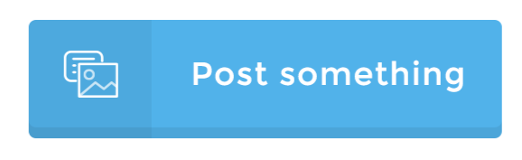
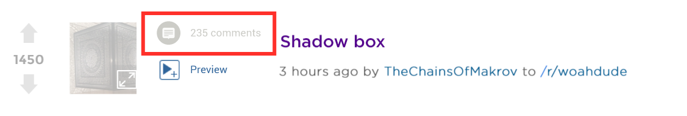
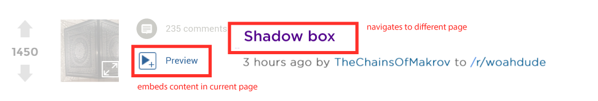

Web Design / Research Project
For this project I decided to design Reddit, a social news aggregation forum. Reddit allows anonymous users to post links to articles from around the web; a comments page accompanies each article where the article can be freely discussed. There are also communities known as “subreddits” where articles or discussions about related topics are posted. While Reddit is the 26th most popular website according to Alexa Internet, inc. (1), in my personal experience I have found new users to the site confused by the interface. I’ve overheard many friends complain that Reddit’s design is ugly and outdated, which further hurts their experience. Specifically, some users either don’t notice or struggle to find the comments for each post. Moreover, other uses have difficulty navigating between subreddits. Finally, the aesthetic of the site is mainly text with little styling, which doesn’t add to user satisfaction. Below is a mockup of my Reddit front page redesign, which is an extension of Reddit user Styke’s design concept.
At the top of each page a header image is displayed along with the Reddit logo. If the user has an account they can view their profile and settings on the right side of the header. The center panel of this design shows all the posts along with options to filter by new, rising, controversial, etc. The left side allows the user to navigate between their favorite subreddits, post new content, or contribute to Reddit Gold.
If a user wants to post a new link or text in the Reddit feed for all users to see, they can simply click the “Post Something” button in the left sidebar. This action requires a user have an account and thus this button would only be available for logged in users. If clicked the user will be redirected to a new page where they can share the link and/or accompanying text.
If a user wants to view the Reddit comments for a specific post, they can click the “Comments” text adjacent to the post thumbnail. This will redirect the user to a new page containing the post comments and does not require the user to be logged in.
If a user wants to view an article or text post on their Reddit feed, they have two options. First, they can simply click on the post title. This will redirect them to a new page. If the user wants to embed the content on their current page, they can click the “Preview” button located just below the article comments. The content will then pop up just below the button. Neither of these two options requires the user be logged in.
I believe this interface directly amends the issues current users have with Reddit. First, by having both an icon and “comments” text for each article, users will quickly be able to navigate to the comments page. Having an icon next to accompanying text is not only proven to generally make users' navigation of any website faster, but also makes the site more visually appealing; satisfaction is perhaps the most important quality of a website like Reddit and thus an interface with great aesthetics will perform better. To further improve the design, the user can customize the header of the home page when they create an account. The header will still change as the user visits different subreddits; however, on the front page it will always be a picture of their choosing. To make transitions between subreddits and the front page more efficient and easier to understand the site will always display a sidebar with subreddit navigation. Finally, each post has an preview option below the comments. This allows the user to view the post’s content without having to reload a new page. While this is currently a feature of Reddit Enhancement Suite, a web browser extension, I believe it should be a feature for every Reddit user.
If implemented, I believe my interface would have an edge over the current design in terms of satisfaction, efficiency, and memorability. This redesign is more appealing than the current design because of its use of icons and a customizable header. The icons furthermore make efficiency better as links are easier to find than before. After users get accustomed to the new design, I believe they will be easily be able to remember how to use it. That said, making millions of users transition to a new site is a major obstacle, thus making learnability a major issue. Errors would be frequent in the beginning.
(1) "List of Most Popular Websites." Wikipedia. Wikimedia Foundation, n.d. Web. 28 Nov. 2016. https://en.wikipedia.org/wiki/List_of_most_popular_websites
(2) "Reddit.com: Api Documentation." Reddit.com: Api Documentation. N.p., n.d. Web. 28 Nov. 2016. https://www.reddit.com/dev/api/
(3) N.p., 2014. Web. 28 Nov. 2016. https://www.reddit.com/r/web_design/comments/2iwiyg/i_gave_the_reddit_front_page_a_makeover_let_me/.